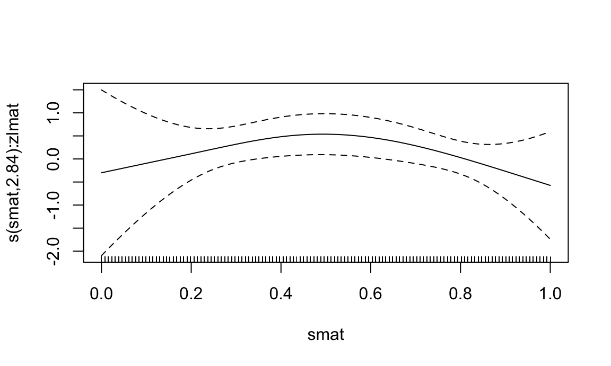

Functional regression in R
This tutorial provides an introduction to key functional regression models. It is a work in progress and will likely be updated over time. Libraries used in this tutorial are loaded below.
library(tidyverse)
## ── Attaching core tidyverse packages
## ✔ dplyr 1.1.4 ✔ readr 2.1.5
## ✔ forcats 1.0.0 ✔ stringr 1.5.1
## ✔ ggplot2 3.5.1 ✔ tibble 3.2.1
## ✔ lubridate 1.9.4 ✔ tidyr 1.3.1
## ✔ purrr 1.0.4
## ── Conflicts ───────────────────────
## ✖ dplyr::filter() masks stats::filter()
## ✖ dplyr::lag() masks stats::lag()
## ℹ Use the conflicted package (<http://conflicted.r-lib.org/>) to force all conflicts to become errors
library(refund)
library(mgcv)
## Loading required package: nlme
##
## Attaching package: 'nlme'
##
## The following object is masked from 'package:dplyr':
##
## collapse
##
## This is mgcv 1.9-1. For overview type 'help("mgcv-package")'.
library(tictoc)
library(vbvs.concurrent) # devtools::install_github("jeff-goldsmith/vbvs.concurrent")
library(viridis)
## Loading required package: viridisLite
library(patchwork)Note that we will use the refund package,
vbvs.concurrent, and mgcv to do functional
data analysis.
Pupillometer data
I will be using examples using curves of pupil response to a light stimulus. Some subjects smoke cannabis 60 minutes before the light stimulus and others did not. The goal is to see whether the pupil response to light differs for those who used cannabis. You can download the data here.
load(here::here("Downloads", "pupil.Rdata"))
head(pupil)
## # A tibble: 6 × 10
## id use_group use age gender bmi alcohol seconds
## <chr> <chr> <dbl> <int> <chr> <dbl> <dbl> <dbl>
## 1 003-001 Daily - Concentrates 1 27 Female 22.9 4 0.602
## 2 003-001 Daily - Concentrates 1 27 Female 22.9 4 0.635
## 3 003-001 Daily - Concentrates 1 27 Female 22.9 4 0.668
## 4 003-001 Daily - Concentrates 1 27 Female 22.9 4 0.702
## 5 003-001 Daily - Concentrates 1 27 Female 22.9 4 0.735
## 6 003-001 Daily - Concentrates 1 27 Female 22.9 4 0.769
## # ℹ 2 more variables: percent_change_baseline <dbl>, percent_change <dbl>The functional data is percent change in pupil diameter over the course of 5 seconds immediately after the pupil is exposed to a flash of light. This is referred to as the pupil light response curve.
Variables included in this dataset are:
id: subject iduse: whether a subject used cannabis,1=useand0=no useage, in yearsalcohol: average weekly number of alcoholic beveragesseconds: the functional domainpercent_change: the pupil light response curve collected 40 minutes after smoking cannabis for those withuse = 1and after an equivalent no-smoking rest time for those withuse = 0percent_change_baseline: the pupil light response curve values at baseline, before any participants have consumed cannabis
Curves are shown below:
baseline = pupil %>%
ggplot(aes(seconds, percent_change_baseline)) +
geom_line(aes(group = id), alpha = 0.2) +
geom_smooth(aes(color = factor(use), linetype = factor(use)), se = FALSE) +
#facet_wrap(~use_group) +
theme_minimal() +
ylim(-60, 20) +
theme(legend.position = "bottom")
post = pupil %>%
ggplot(aes(seconds, percent_change)) +
geom_line(aes(group = id), alpha = 0.2) +
geom_smooth(aes(color = factor(use), linetype = factor(use)), se = FALSE) +
#facet_wrap(~use_group) +
theme_minimal() +
ylim(-60, 20) +
theme(legend.position = "bottom")
baseline + post
## `geom_smooth()` using method =
## 'gam' and formula = 'y ~ s(x, bs =
## "cs")'
## Warning: Removed 546 rows containing
## non-finite outside the scale range
## (`stat_smooth()`).
## Warning: Removed 528 rows containing missing
## values or values outside the scale
## range (`geom_line()`).
## `geom_smooth()` using method =
## 'gam' and formula = 'y ~ s(x, bs =
## "cs")'
## Warning: Removed 289 rows containing
## non-finite outside the scale range
## (`stat_smooth()`).
## Warning: Removed 264 rows containing missing
## values or values outside the scale
## range (`geom_line()`).SoFR
For scalar-on-function regression with a Gaussian outcome the model we are interested in is
\[Y_i = \beta_0 + \sum_j \beta_jX_{ij} + \sum_k\int_t \mathcal{B}_k(t)Z_{ik}(t)dt + \epsilon_i,\] where:
- \(Y_i\) is a scalar outcome
- Each \(X_{ij}\) is a scalar covariate
- Each \(\beta_j\) is a regression coefficient for a scalar covariate
- Each \(Z_{ik}(t)\) is a functional covariate
- Each \(\mathcal{B}_k(t)\) is a coefficient function, a regression coefficient for a functional covariate
- \(\epsilon_i\) are normally distributed iid errors
The GLM version of this model (for non-Gaussian outcomes, usually binary) is:
\[g(E[Y_i|X_i, Z_i]) = \beta_0 + \sum_j \beta_jX_{ij} + \sum_k\int_t \mathcal{B}_k(t)Z_{ik}(t)dt,\] where \(g(\cdot)\) is a known link function (think logit in the case of logistic regression, for example.)
Important practical considerations
- For SoFR, can’t have missing functional observations so need to
impute or remove
- Default is to use complete.cases (check your sample size in the results!)
- For
pfr(), binomial responses should be specified as a numeric vector rather than as a matrix or a factor.
refund::pfr()
First I’ll fit a model with a continuous scalar outcome (age) and
functional predictor (percent change in pupil size) using the
pfr() function from the refund package.
pfr stands for “penalized functional regression” and was
originally associated with this paper (ADD REFERENCE).
The data need to be set up a specific way for modeling so we will process the data first.
sofr_df = pupil %>%
select(-percent_change_baseline) %>%
pivot_wider(names_from = seconds, values_from = percent_change,
names_prefix = "t_") %>%
as.data.frame()
pupil_mat = sofr_df %>% select(starts_with("t_")) %>% as.matrix()
# reorganize data for use with refund::pfr() function
sofr_df$percent_change = pupil_matpfr_age = pfr(age ~ lf(percent_change, k = 30, bs = "cr"),
data = sofr_df)summary(pfr_age)
##
## Family: gaussian
## Link function: identity
##
## Formula:
## age ~ s(x = percent_change.tmat, by = L.percent_change, k = 30,
## bs = "cr")
##
## Parametric coefficients:
## Estimate Std. Error t value Pr(>|t|)
## (Intercept) 33.275 2.742 12.13 <2e-16 ***
## ---
## Signif. codes: 0 '***' 0.001 '**' 0.01 '*' 0.05 '.' 0.1 ' ' 1
##
## Approximate significance of smooth terms:
## edf Ref.df F p-value
## s(percent_change.tmat):L.percent_change 2.001 2.002 0.353 0.703
##
## R-sq.(adj) = -0.0105 Deviance explained = 0.577%
## -REML = 397.52 Scale est. = 35.808 n = 125
plot(pfr_age)pfr_use = pfr(use ~ lf(percent_change, k = 30, bs = "cr") + age + alcohol,
family = binomial,
data = sofr_df)Below I show model summary and default plotting function.
summary(pfr_use)
##
## Family: binomial
## Link function: logit
##
## Formula:
## use ~ s(x = percent_change.tmat, by = L.percent_change, k = 30,
## bs = "cr") + age + alcohol
##
## Parametric coefficients:
## Estimate Std. Error z value Pr(>|z|)
## (Intercept) 8.40930 2.37732 3.537 0.000404 ***
## age -0.04372 0.03687 -1.186 0.235691
## alcohol 0.08186 0.07870 1.040 0.298251
## ---
## Signif. codes: 0 '***' 0.001 '**' 0.01 '*' 0.05 '.' 0.1 ' ' 1
##
## Approximate significance of smooth terms:
## edf Ref.df Chi.sq p-value
## s(percent_change.tmat):L.percent_change 2.843 3.17 13.93 0.00363 **
## ---
## Signif. codes: 0 '***' 0.001 '**' 0.01 '*' 0.05 '.' 0.1 ' ' 1
##
## R-sq.(adj) = 0.169 Deviance explained = 18.1%
## -REML = 61.511 Scale est. = 1 n = 125
plot(pfr_use)
mgcv::gam()
First we need to process the data a little bit differently- some of
this is done under the hood in pfr()
ncols = ncol(pupil_mat)
# vector, matrix containing functional domain of observed data (assumes everyone is on the same grid)
sind = seq(0, 1, len = ncols)
smat = matrix(sind, nrow(sofr_df), ncols, byrow = TRUE)
# construct quadrature weights for numeric integration
sofr_df$smat = I(smat)
sofr_df$lmat = I(matrix(1/ncols, nrow(sofr_df), ncols))
sofr_df$zlmat = I(sofr_df$lmat * sofr_df$percent_change)
gam_use = gam(use ~ s(smat, by=zlmat, bs = "cr", k = 30) + age + alcohol,
data= sofr_df,
method = "REML", family = binomial)summary(gam_use)
##
## Family: binomial
## Link function: logit
##
## Formula:
## use ~ s(smat, by = zlmat, bs = "cr", k = 30) + age + alcohol
##
## Parametric coefficients:
## Estimate Std. Error z value Pr(>|z|)
## (Intercept) 8.40040 2.37674 3.534 0.000409 ***
## age -0.04375 0.03687 -1.187 0.235315
## alcohol 0.08181 0.07870 1.040 0.298552
## ---
## Signif. codes: 0 '***' 0.001 '**' 0.01 '*' 0.05 '.' 0.1 ' ' 1
##
## Approximate significance of smooth terms:
## edf Ref.df Chi.sq p-value
## s(smat):zlmat 2.844 3.175 13.9 0.00369 **
## ---
## Signif. codes: 0 '***' 0.001 '**' 0.01 '*' 0.05 '.' 0.1 ' ' 1
##
## R-sq.(adj) = 0.169 Deviance explained = 18%
## -REML = 61.547 Scale est. = 1 n = 125
plot(gam_use)
Plotting in mgcv
Here we show how to obtain pointwise confidence intervals for coefficient functions
# put required data inputs into a dataframe
# need to have same names as covariates in model
s_pred = seq(0,1, length.out = 100)
df_pred = data.frame(smat = s_pred, zlmat = 1, alcohol = 0, age = 0)
# call predict.gam
coef_est = predict(gam_use, newdata = df_pred, type = "terms", se.fit = TRUE)
# extract point estimate and pointwise standard errors
beta_hat = coef_est$fit[,3]
se_beta_hat = coef_est$se.fit[,3]
# construct lower and upper 95% confidence bounds
lower = beta_hat - 1.96 * se_beta_hat
upper = beta_hat + 1.96 * se_beta_hatPlot the results- I am plotting \(\beta(t)\) here but could also plot \(e^{\beta(t)}\) to get the odds ratio.
tibble(time = s_pred, beta_hat = beta_hat, lower = lower, upper = upper) %>%
ggplot(aes(time, beta_hat)) +
geom_line() +
geom_line(aes(y = lower), linetype = 2, color = "blue") +
geom_line(aes(y = upper), linetype = 2, color = "blue") +
geom_hline(yintercept = 0, linetype = 3, color = "red") +
theme_minimal()FoSR
The function-on-scalar regression model is
\[Y_i(t) = \beta_0(t) + \sum_j \beta_j(t)X_{ij} + b_i(t) + \epsilon_i(t),\]
where:
- \(Y_i(t)\) is a functional outcome
- Each \(X_{ij}\) is a scalar covariate
- Each \(\beta_j(t)\) is a coefficient function
- \(b_i(t)\) is a subject-specific functional random effect. This captures correlation within subjects over time that is not captured by the mean. This term is not always included in FoSR models, but it’s generally a good idea because it gives better inference
- \(\epsilon_i(t)\) are normally distributed iid errors
Important practical considerations
- Need to dummy code categorical variables (1 vs. 0 for binary, for example)
- Subject id variable should be a factor
- Pointwise confidence intervals are technically subject to multiple comparisons issues
Modeling
For FoSR I like to use mgcv::gam() directly. This
modeling process happens in 3 steps:
- Fit the mean model \(Y_i(t) = \beta_0(t) + \sum_j \beta_j(t)X_{ij} + \epsilon_i(t)\), assuming iid errors across individuals and the domain.
- Obtain residuals from the model in step (1) and decompose these into principle directions of variation (eigenfunctions) using FPCA.
- Refit the model using top eigenfunctions from step (2) as random effects. This step allows us to estimate \(b_i(t)\) and obtain more valid inference for our coefficient function.
These steps are implemented below:
##########################################################################################
## step 1
mean_mod = mgcv::gam(percent_change ~ s(seconds, k=30, bs="cr") +
s(seconds, by=use, k=30, bs = "cr"),
data = pupil, method = "REML")
##########################################################################################
## step 2
## Create a matrix of residuals
resid_df = pupil %>%
filter(!is.na(percent_change)) %>%
select(id, seconds) %>%
mutate(resid = mean_mod$residuals) %>%
pivot_wider(names_from = seconds, values_from = resid, names_prefix = "resid.")
resid_mat = as.matrix(resid_df[,-1])
rownames(resid_mat) = resid_df$id
fpca_results = fpca.face(resid_mat, argvals = unique(pupil$seconds), knots = 15)
eigenfunctions <- as.data.frame(fpca_results$efunctions)
colnames(eigenfunctions) <- paste0("Phi", seq(1, fpca_results$npc))
eigenfunctions$seconds <- unique(pupil$seconds)
pupil = pupil %>% left_join(., eigenfunctions, by = "seconds") %>%
as_tibble() %>%
arrange(id, seconds) %>%
mutate(id = factor(id))
##########################################################################################
# Step 3
fosr_mod <- mgcv::bam(percent_change ~
s(seconds, k=30, bs="cr") +
s(seconds, by=use, k=30, bs = "cr") +
s(id, by = Phi1, bs="re") +
s(id, by = Phi2, bs="re")+
s(id, by = Phi3, bs="re") +
s(id, by = Phi4, bs="re"),
method = "fREML", data = pupil, discrete = TRUE)
summary(fosr_mod)
##
## Family: gaussian
## Link function: identity
##
## Formula:
## percent_change ~ s(seconds, k = 30, bs = "cr") + s(seconds, by = use,
## k = 30, bs = "cr") + s(id, by = Phi1, bs = "re") + s(id,
## by = Phi2, bs = "re") + s(id, by = Phi3, bs = "re") + s(id,
## by = Phi4, bs = "re")
##
## Parametric coefficients:
## Estimate Std. Error t value Pr(>|t|)
## (Intercept) -25.1007 0.8544 -29.38 <2e-16 ***
## ---
## Signif. codes: 0 '***' 0.001 '**' 0.01 '*' 0.05 '.' 0.1 ' ' 1
##
## Approximate significance of smooth terms:
## edf Ref.df F p-value
## s(seconds) 28.57 28.90 272.106 <2e-16 ***
## s(seconds):use 11.54 14.17 9.762 <2e-16 ***
## s(id):Phi1 123.16 125.00 4321.616 <2e-16 ***
## s(id):Phi2 123.57 125.00 923.221 <2e-16 ***
## s(id):Phi3 123.52 125.00 467.269 <2e-16 ***
## s(id):Phi4 122.73 125.00 113.579 <2e-16 ***
## ---
## Signif. codes: 0 '***' 0.001 '**' 0.01 '*' 0.05 '.' 0.1 ' ' 1
##
## R-sq.(adj) = 0.995 Deviance explained = 99.5%
## fREML = 24304 Scale est. = 0.90382 n = 16500Plotting
Here we will plot results much the same way we did when plotting results for SoFR
# put required data inputs into a dataframe
# need to have same names as covariates in model
s_pred = seq(0,1, length.out = 100)
df_pred = pupil %>%
filter(id == first(id))
# call predict.gam
coef_est = predict(fosr_mod, newdata = df_pred, type = "terms", se.fit = TRUE)
tibble(beta1 = coef_est$fit[, 2],
seconds = df_pred$seconds,
se_beta1 = coef_est$se.fit[,2],
lower = beta1 - 1.96 * se_beta1,
upper = beta1 + 1.96 * se_beta1) %>%
ggplot(aes(seconds, beta1)) +
geom_line() +
geom_line(aes(y = lower), linetype = 2, color = "blue") +
geom_line(aes(y = upper), linetype = 2, color = "blue") +
geom_hline(yintercept = 0, linetype = 3, color = "red") +
theme_minimal()FoFR
Function-on-function regression is a class of models where the outcome is a function and the covariate(s) is/are also functions. There are different formulations of this model and which one you pick really depends on what your data looks like and what questions you’re trying to answer.
The main models to consider are summarized below.
Important practical considerations
FLCM:
- Spline estimates aren’t penalized (I believe)
- To get confidence intervals I would recommend the bootstrap
- I’m not sure that you can include scalar predictors
FoFR and Functional historical model implemented in
refund::pffr()
- Can’t have missing functional observations so need to impute or
remove
- Code will break if you have missing data
- There is a lot more you can do with
pffrthan I know how to do without digging into it.
Functional linear concurrent model (FLCM)
A functional linear concurrent model describes the relationship between a functional response and a functional predictor, where the effect of the predictor at each time point is modeled by a time-varying coefficient function, allowing the association to evolve dynamically over time. A functional linear concurrent model can be thought of as performing separate linear regressions at each time point \(t\), but with the added constraint that the regression coefficients vary smoothly over \(t\), ensuring temporal coherence in the estimated relationship between the functional predictor and response.
This model is given by:
\[Y_i(t) = \beta_0(t) + \sum_{j} \beta_j(t)X_{ij}(t) + b_i(t) + \epsilon_i(t)\]
Code
flcm = vb_concurrent(percent_change ~ percent_change_baseline | seconds,
id.var = "id",
data = pupil,
Kt = 20, # number of spline basis functions
Kp = 10 # number of FPCs to estimate
)
## Standardizing Variables
## ..
## Constructing Xstar; doing data organization
## Beginning Algorithm
## ..........
## Warning: `arrange_()` was deprecated in
## dplyr 0.7.0.
## ℹ Please use `arrange()` instead.
## ℹ See vignette('programming') for
## more help
## ℹ The deprecated feature was likely
## used in the vbvs.concurrent
## package.
## Please report the issue to the
## authors.
## This warning is displayed once
## every 8 hours.
## Call
## `lifecycle::last_lifecycle_warnings()`
## to see where this warning was
## generated.
## Warning: `rename_()` was deprecated in dplyr
## 0.7.0.
## ℹ Please use `rename()` instead.
## ℹ The deprecated feature was likely
## used in the vbvs.concurrent
## package.
## Please report the issue to the
## authors.
## This warning is displayed once
## every 8 hours.
## Call
## `lifecycle::last_lifecycle_warnings()`
## to see where this warning was
## generated.Plotting the coefficient function.
flcm$beta.pm %>%
ggplot(aes(seconds, percent_change_baseline)) +
geom_line()Historical functional model
A historical functional model extends the functional linear concurrent model by allowing the response at time \(t\) to depend not only on the predictor at \(t\) but also on its past values.
- Useful for when function and covariate are observed on the same domain, and you don’t want the covariate measurements from the future to predict the response in the present.
\[Y_i(t) = \beta_0(t) + \sum_{j}\int_{s = 0}^t \beta_j(t, s)X_{ij}(s)ds + b_i(t) + \epsilon_i(t)\]
Code
For this and for the FoFR model, we will use the pffr
function from the refund package. First we have to rearrange the data to
work with pffr.
pupil_noMissing = pupil %>%
group_by(id) %>%
mutate(missing = sum(is.na(percent_change_baseline))+ sum(is.na(percent_change))) %>%
ungroup() %>%
filter(missing == 0)
nsubj = length(unique(pupil_noMissing$id)) # number of subjects
ntime = length(unique(pupil_noMissing$seconds)) # number of time points, assuming subjects are measured on the same grid
y_fofr = matrix(pupil_noMissing$percent_change, nrow = nsubj, ncol = ntime, byrow = TRUE)
x_fofr = matrix(pupil_noMissing$percent_change_baseline, nrow = nsubj, ncol = ntime, byrow = TRUE)
fofr_df = pupil_noMissing %>%
select(id, use, age) %>% distinct() %>% as.data.frame()
fofr_df$y = y_fofr
fofr_df$x = x_fofr
t = s = unique(pupil$seconds)
# need to either impute or remove missing values in the x
fofr_df = fofr_df[complete.cases(fofr_df),]Now we can do the modeling- I’m only going to model the use group to speed this up, but also because I believe the results are more interesting.
fhist_mod = pffr(y ~ s(id, bs = "re") + ff(x, xind = s, limits = "s<t",
splinepars = list(bs = "ps",
k= c(5, 5))),
yind = t, filter(fofr_df, use == 1))
## <limits>-argument detected. Changing to Riemann sums for numerical integration.
## Warning in ff(x, xind = s, limits = "s<t", splinepars = list(bs = "ps", : Very
## low effective rank of <x> detected. 3 largest eigenvalues of its covariance
## alone account for >99.5% of variability. <ffpc> might be a better choice here.
## Warning in ff(x, xind = s, limits = "s<t", splinepars = list(bs = "ps", : <k>
## larger than effective rank of <x>. Model identifiable only through penalty.where
s(seconds, bs = "re"): subject specific random intercept \(b_i(t)\)k= c(15, 15): defines number of basis functions for the surface (default is 5, which is probably too few but I’m using that right now because it is faster)
summary(fhist_mod)
##
## Family: gaussian
## Link function: identity
##
## Formula:
## y ~ s(id, bs = "re") + ff(x, xind = s, limits = "s<t", splinepars = list(bs = "ps",
## k = c(5, 5)))
##
## Constant coefficients:
## Estimate Std. Error t value Pr(>|t|)
## (Intercept) -29.934 1.868 -16.03 <2e-16 ***
## ---
## Signif. codes: 0 '***' 0.001 '**' 0.01 '*' 0.05 '.' 0.1 ' ' 1
##
## Smooth terms & functional coefficients:
## edf Ref.df F p-value
## Intercept(t) 18.51 19.00 327.4 <2e-16 ***
## s(id) 446.16 457.00 444.8 <2e-16 ***
## ff(x,s) 21.06 21.61 111.1 <2e-16 ***
## ---
## Signif. codes: 0 '***' 0.001 '**' 0.01 '*' 0.05 '.' 0.1 ' ' 1
##
## R-sq.(adj) = 0.992 Deviance explained = 99.2%
## -REML score = 20494 Scale est. = 1.3308 n = 12144 (92 x 132)Finally, do the plotting. Now we have estimated a coefficient surface instead of a coefficient function.
# extract surface for plotting
fhist_surf = coef(fhist_mod, n1 = 100, n2 = 100)$smterms$"ff(x,s)"$coef %>%
select(s = x.smat, t = x.tmat, value = value) %>%
as_tibble() %>%
mutate(value = ifelse(s>t, NA, value))
## using seWithMean for s(t.vec) .
fhist_surf %>%
ggplot(aes(s, t)) +
geom_tile(aes(fill = value, col = value)) +
scale_fill_viridis_c() +
scale_colour_viridis_c() +
theme(legend.position = "bottom")FoFR model
The functional outcome and functional covariate can (but don’t necessarily need to be) on the same domain. Allows the functional response \(Y(t)\) to depend on the entire functional predictor(s).
\[Y_i(t) = \beta_0(t) + \sum_{j}\int_s \beta_j(t, s)X_{ij}(s)ds + b_i(t) + \epsilon_i(t)\]
Code
This is very similar to the functional historical model, and I will use the same version of the data. For modeling, I’m also adding a scalar covariate (use) which could be added to the historical model as well. I’m also removing the functional random intercept so that it runs a bit faster, but would recommend keeping this in for modelling when you also want inference.
fofr_mod = pffr(y ~ ff(x, xind = s) + age,
yind = t, fofr_df)
## Warning in ff(x, xind = s): Very low effective rank of <x> detected. 3 largest
## eigenvalues of its covariance alone account for >99.5% of variability. <ffpc>
## might be a better choice here.
## Warning in ff(x, xind = s): <k> larger than effective rank of <x>. Model
## identifiable only through penalty.Model summary
summary(fofr_mod)
##
## Family: gaussian
## Link function: identity
##
## Formula:
## y ~ ff(x, xind = s) + age
##
## Constant coefficients:
## Estimate Std. Error t value Pr(>|t|)
## (Intercept) -7.4258 0.4346 -17.09 <2e-16 ***
## ---
## Signif. codes: 0 '***' 0.001 '**' 0.01 '*' 0.05 '.' 0.1 ' ' 1
##
## Smooth terms & functional coefficients:
## edf Ref.df F p-value
## Intercept(t) 17.553 19.000 634.54 < 2e-16 ***
## ff(x,s) 21.796 23.033 294.22 < 2e-16 ***
## age(t) 2.559 2.911 12.08 5.36e-07 ***
## ---
## Signif. codes: 0 '***' 0.001 '**' 0.01 '*' 0.05 '.' 0.1 ' ' 1
##
## R-sq.(adj) = 0.838 Deviance explained = 83.8%
## -REML score = 49866 Scale est. = 29.701 n = 15972 (121 x 132)Plotting
fofr_surf = coef(fofr_mod, n1 = 100, n2 = 100)$smterms$"ff(x,s)"$coef %>%
select(s = x.smat, t = x.tmat, value = value) %>%
as_tibble()
## using seWithMean for s(t.vec) .
fofr_surf %>%
ggplot(aes(s, t)) +
geom_tile(aes(fill = value, col = value)) +
scale_fill_viridis_c() +
scale_colour_viridis_c() +
theme(legend.position = "bottom")Resources
- I highly recommend this FDA with R book
Some papers about models covered in this tutorial: - Functional data analysis with pupillometer data - SoFR - Functional linear concurrent model - FoFR